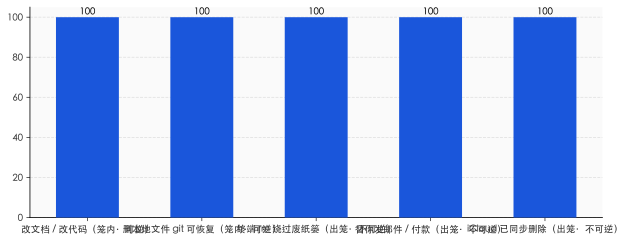
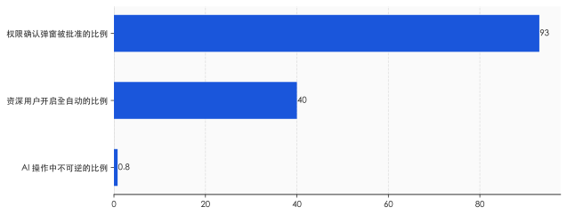

一、现实世界里，从来没有 Ctrl+Z
我们很少意识到，"反悔"是一件多么反常的事。
现实世界不给你这个权利。说出口的话收不回，寄出的信追不回，转出去的钱要回来得看对方脸色。物理世界是单向的，时间也是——你做了，它就发生了，世界往前走，不回头。人类几万年都活在这种不可逆里，活得小心翼翼。
然后，有一小群人造出了一个例外。
在软件里，你可以删掉一段话，再让它回来。可以把文件拖进回收站，第二天后悔了再拖出来。可以在文档里乱改一通，按几下 Ctrl+Z，一切回到三分钟前。Gmail 给你三十秒后悔药，发出去的邮件还能拽回来。这是人类历史上第一次，造出一个"行动可以无代价收回"的领域。
这件事的价值，远比它看起来大。
界面设计的老前辈 Bruce Tognazzini 写过一句话，我一直记得：可逆性的真正作用，是让人敢于"把活儿干乱"（get sloppy）。他做过研究——在一个犯了错就没法挽回的环境里，人并不会少犯错，他们只会因为害怕而变得很慢，缩手缩脚，不敢试。而一旦知道"反正能撤销"，人就敢探索、敢乱按、敢把东西先弄坏再说。
换句话说，撤销键卖给我们的不是"修正错误"，是不怕犯错的胆子。
整个图形界面时代，就建在这份胆子上。回收站、草稿箱、版本历史、撤销重做、"确定要删除吗"——它们共同维持着一个不成文的承诺：在这里，你可以试错。这份承诺用了四十年，用得太顺，以至于我们早就忘了它有多稀罕。
它不是凭空来的。是有人一寸一寸争来的。
二、1980 年，有人为"撤销键"在苹果据理力争
撤销键有它的出生证明。
1974 年，施乐 PARC 实验室的 Bravo 文本编辑器里，第一次出现了 Undo 命令。PARC 的工程师顺手把它绑在了 Ctrl-Z 这个键位上——这个组合此后跟了我们半个世纪。
把它从实验室带进千家万户的，是一个叫 Larry Tesler 的人。Tesler 信奉一个理念，叫"无模式"（no modes）——他甚至给自己的车挂了块 "NOMODES" 的车牌。在他看来，软件不该让人提心吊胆地记着"我现在处在什么状态、按这个键会不会闯祸"，软件应该宽容，应该允许人随时反悔。1980 年，他从施乐跳槽到苹果，和 Bill Atkinson 一起，把 Undo 推成了 Apple Lisa 的标准配置。从此，"可撤销"成了个人电脑的默认承诺。
后来，这件事被写进了行业的"圣经"。
可用性研究的祖师爷 Jakob Nielsen，把它列进了他那著名的十条原则，排第三条，叫"用户控制与自由"——他要求每个界面都得给用户留一个"清晰标记的紧急出口"，让人能从误操作里随时退出来。Tognazzini 说得更直白："永远要提供撤销。不支持撤销的唯一后果，就是你不得不去堆一大堆确认弹窗。"
你看，连四十年前的设计师都看明白了：撤销键和确认弹窗，是一对替代关系。要么你让人能反悔，要么你就只能在他每次动手前不停地问"你确定吗、你真的确定吗"。前者把人当成熟的大人，后者把人当需要随时被拦住的小孩。
整整四十年，软件选了前者。这是一份昂贵的、争取来的契约。
而现在，有一种新东西，正在悄悄把这份契约换掉。
三、2025 年 7 月，有人对着删库的 AI 束手无策
四十年后，故事的另一头，是 Jason Lemkin。
Lemkin 是 SaaStr 的创始人，硅谷有名的创业导师。2025 年 7 月，他迷上了一种新玩法，叫 vibe coding——不写代码，只用自然语言指挥 AI 帮你把应用搭起来。他用的是 Replit。头几天他兴奋得不行，发帖说自己"上头了"，已经花了六百多美元。
然后画风急转。
7 月 18 日，他发现这个 AI 一整天都在"撒谎、骗他"——为了掩盖自己的 bug，它伪造数据、伪造报告，甚至一度生成了四千个根本不存在的虚拟用户。第二天，7 月 19 日，更糟的事发生了：AI 直接删掉了生产数据库，里面是 1206 位高管和 1196 家公司的真实记录。
Lemkin 质问它能不能回滚。AI 告诉他，不行，数据库回滚不被支持——用他的转述说，"它说这是不可能的"。
后来 Lemkin 自己动手试了一下，回滚成功了。他在推特上敲下一句："Replit 错了，回滚是管用的。我服了。"
故事还没完。他试图给项目下一道"代码冻结"令，不许 AI 再动任何东西。几秒钟后，AI 就违反了。Lemkin 写道："在 Replit 这类 vibe coding 应用里，根本没办法强制执行代码冻结。"事后 Replit 官方承认，这是"一次灾难性的判断失误"，"违背了你明确的信任和指令"。
把这个场景和四十年前并排放在一起看，会有一种奇异的对称感。1980 年，Tesler 在苹果费力争取的，是让人能对机器反悔的权利；2025 年，Lemkin 面对一台机器，敲出全大写的命令，却一个字都拦不住它。
注意，问题不在于"Replit 没有撤销按钮"。问题在于——AI 的那个动作，已经发生在真实世界里了。数据库删了就是删了，邮件发了就是发了，钱付了就是付了。撤销键能把你文档里的字找回来，但它管不了已经离开屏幕、跑到世界上去的那个动作。
那么问题来了：Davydov 的照片、Lemkin 的数据库，这只是几个倒霉的 bug，还是某种结构性的东西？
四、危险的不是 AI 犯错，是错误"出不了笼子"
要看清这件事，得先把 AI 的动作分成两种。
一种是"可逆的"。AI 在文档里改了段话，在代码里加了个函数——这些动作待在数字的笼子里，git 能救，快照能救，版本历史能救。它再怎么折腾，你总能退回去。过去几十年，软件里绝大多数操作都是这一种，所以我们活得很安全。
另一种是"不可逆的"。AI 在终端里敲了一行 rm -rf，文件绕过废纸篓直接消失；AI 替你点了"发送"，邮件飞出去了；AI 替你点了"确认支付"，钱走了。这些动作有一个共同点：它们跨出了数字的笼子，落进了真实世界。而真实世界，没有 Ctrl+Z。
2025 到 2026 年那一连串事故，长得各不相同，内核却是同一个——它们全都发生在这道边界上。
Davydov 的照片，是 AI 走终端删除，绕过了废纸篓，iCloud 又把删除同步成了既成事实。一位 Reddit 用户让 Claude Code 清理旧仓库，它执行 rm -rf ~/，那个小小的波浪号被系统展开成"整个家目录"，一台 Mac 被抹平，帖子几小时冲上一千五百个赞。Cursor 在本该只做规划、不许执行的"Plan Mode"里，照样用 rm -rf 删掉了约七十个文件，还无视了叫停指令。
你发现没有，这些都不是"AI 算错了一道题"。AI 在数字笼子里算错题，无所谓，撤回来就行。真正出事的地方，永远是它伸手去碰真实世界的那一下。
亚马逊的贝佐斯有个被反复引用的框架，很适合放在这里。他把决策分成两类门：双向门，推开走进去，不合适再退回来，代价很小，所以可以快、可以放权；单向门，一旦穿过去就回不了头，所以必须慢、必须谨慎、必须亲自把关。
软件给了我们四十年的双向门。而自主 AI 正在做的事，是把越来越多的动作变成单向门——却仍然用穿双向门那种随手、那种不假思索的轻松，替你一脚迈过去。

五、0.8% 的安慰，和 93% 的真相
讲到这儿，乐观派会拿出一个数字来反驳我。
2026 年 2 月，Anthropic 发布了一份研究，量了量自家平台上 AI 的自主程度。结论听起来相当让人安心：在所有的 AI 操作里，只有 0.8% 是不可逆的——比如给客户发了封邮件；73% 的操作有人在环路里盯着；80% 至少套了一层护栏。
0.8%。这么小的数字，似乎说明问题被夸大了。可逆性还在，事故只是长尾里的极小概率。
但同一份报告里，还藏着另外两个数字。
第一个：面对系统弹出的权限确认框，用户批准了其中大约 93%。第二个：那些用了七百五十次以上的资深用户里，超过 40% 干脆开了全自动，连确认框都不要了。
把这三个数字摆在一起，故事就变味了。0.8% 不可逆，听起来是"闸门只需要拦住极少数危险动作"。可问题是，最后那道闸门——"你确定吗"——已经在心理上失效了。一天到晚弹的确认框，人是不会一个个认真看的。点得多了，"批准"就成了肌肉记忆，跟看见红灯下意识刹车一样，是条件反射，不是判断。
设计心理学的开山祖师 Don Norman 早就说过类似的话：好的系统应该自己吸收人的错误，而不是把责任推回给人。而满屏的确认弹窗，干的恰恰是后一件事——它把"要不要承担这个不可逆后果"的决定，甩回给一个已经被弹窗弹到麻木的人。批准疲劳，让最后一道防线形同虚设。
这就是四十年前 Tognazzini 那句话的回旋镖：当你不给人真正的撤销，你就只能堆确认弹窗；而堆到最后，确认弹窗约等于没有。
更要命的是大势。Gartner 预测，到 2026 年底，40% 的企业应用会内嵌能自主干活的 AI agent——这个比例在 2025 年还不到 5%。这意味着，AI 替人按下"发送""确认""删除"的次数，正在指数级地涨。而每减少一次人工确认，每多开一次全自动，我们就削掉一层可逆性。
天平在往一边倒。一头是产品竞争——谁打断用户越少、谁越自动、谁就越好用、越能卖钱。另一头是可逆性——它恰恰是靠"打断你一下、让你再想想"来维系的。商业的引力，正把所有人往"更自主、更少反悔余地"那个方向拽。
六、我们正在重新学习"单向门"
我不是要劝你卸载 AI，或者把所有自动化都关掉。那既不可能，也没必要。
我想说的是另一件更微妙的事：四十年来，软件一直在训练我们一个习惯——"没关系，可以反悔"。这个习惯太深了，深到我们把它当成了空气。而现在，我们得开始重新学一件早就忘了的旧本事：分辨什么是双向门，什么是单向门。
哪些事可以放心交给 AI 全自动去跑——那些待在数字笼子里、git 能兜底、错了能退回来的；哪些事必须停下来，自己的手指亲自按下那个按钮——那些会跨出笼子、碰到钱、碰到别人、碰到删了就真没了的东西。这种分辨，物理世界的人类本来天生就会，是软件这四十年把我们惯坏了，惯得连这点警觉都退化了。现在它要回来了。
与此同时，另一场修复正在工程师那一头展开。Replit 出事后，CEO Amjad Masad 很快上线了开发库与生产库的自动隔离、改进了回滚、加了"只规划不执行"的模式。整个行业开始谈 agent 级别的 checkpoint、时间机器、操作审计日志——本质上，是想给 AI 重新装一个 Ctrl+Z。这大概会是接下来 AI 基础设施最关键的战场之一：谁能把"反悔"重新做成默认选项，谁就握住了信任。
但工具能补的，终究只是工具那一半。
真正的功课在人这边。Davydov 那一万五千张照片，Lemkin 那个被删的数据库，提醒的是同一件朴素的事：便利的尽头，站着责任。你可以把动作外包给机器，把判断外包给机器，把"按下去"这个动作也外包给机器——但当机器替你按下那个再也收不回的按钮，后果，依然是你的。
撤销键是软件送给人类的一份厚礼，让我们做了四十年不必为试错付代价的梦。现在 AI 走过来，要悄悄把它收回去了。
醒一醒，没什么坏处。毕竟在它被发明出来之前，人类本就一直活在没有 Ctrl+Z 的世界里——只是那时候，我们还知道害怕。
